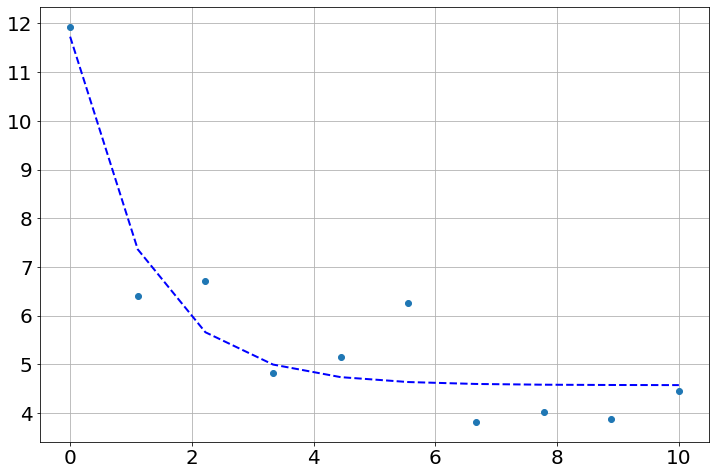
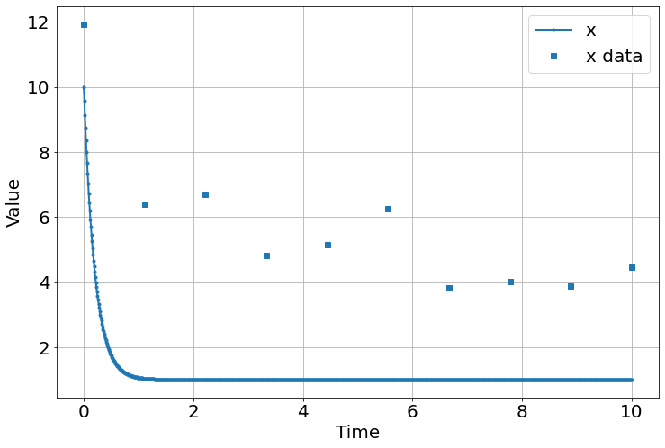
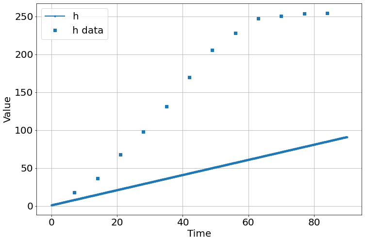
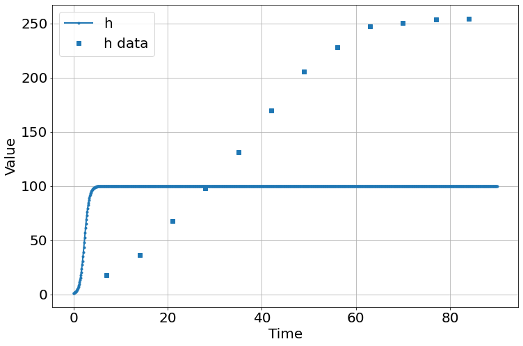
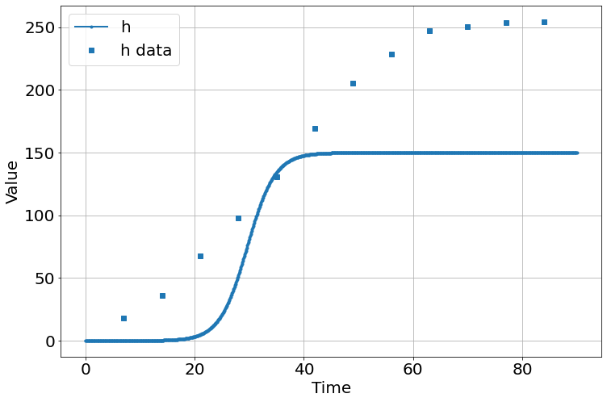
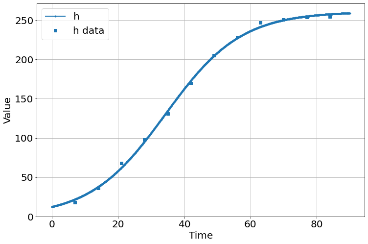

%pylab is deprecated, use %matplotlib inline and import the required libraries.
Populating the interactive namespace from numpy and matplotlibFrom https://people.duke.edu/~ccc14/sta-663/CalibratingODEs.html
%pylab is deprecated, use %matplotlib inline and import the required libraries.
Populating the interactive namespace from numpy and matplotlibdef f(xs, t, ps):
"""Receptor synthesis-internalization model."""
try:
a = ps['a'].value
b = ps['b'].value
except:
a, b = ps
x = xs
return a - b*x
def g(t, x0, ps):
"""
Solution to the ODE x'(t) = f(t,x,k) with initial condition x(0) = x0
"""
x = odeint(f, x0, t, args=(ps,))
return x
def residual(ps, ts, data):
x0 = ps['x0'].value
model = g(ts, x0, ps)
return (model - data).ravel()a = 2.0
b = 0.5
true_params = [a, b]
x0 = 10.0
t = np.linspace(0, 10, 10)
data = g(t, x0, true_params)
data += np.random.normal(size=data.shape)
# set parameters incluing bounds
params = Parameters()
params.add('x0', value=float(data[0]), min=0, max=100)
params.add('a', value= 1.0, min=0, max=10)
params.add('b', value= 1.0, min=0, max=10)
# fit model and find predicted values
result = minimize(residual, params, args=(t, data), method='leastsq')
final = data + result.residual.reshape(data.shape)
# plot data and fitted curves
plot(t, data, 'o')
plot(t, final, '--', linewidth=2, c='blue');
# display fitted statistics
report_fit(result)[[Fit Statistics]]
# fitting method = leastsq
# function evals = 33
# data points = 10
# variables = 3
chi-square = 6.30791195
reduced chi-square = 0.90113028
Akaike info crit = 1.39219617
Bayesian info crit = 2.29995145
[[Variables]]
x0: 11.7281014 +/- 0.94027396 (8.02%) (init = 11.93353)
a: 3.87640476 +/- 1.51606470 (39.11%) (init = 1)
b: 0.84816107 +/- 0.28470831 (33.57%) (init = 1)
[[Correlations]] (unreported correlations are < 0.100)
C(a, b) = 0.982
C(x0, b) = 0.340
C(x0, a) = 0.307
sim=Simulation()
sim.add("x'=a-b*x",10,plot=True)
sim.add_data(t=t,x=data,plot=True)
sim.params(a=5.,b=5)
sim.run(10)
<Figure size 864x576 with 0 Axes>Parameter (name, **kwargs)
fit (sim, *args, method='leastsq')
residual (ps, sim)
results=fit(sim,
Parameter('a',value=1,min=0),
Parameter('b',value=5,min=0),
Parameter('initial_x',value=10,min=0),
method='nelder')
report_fit(result)[[Fit Statistics]]
# fitting method = leastsq
# function evals = 38
# data points = 10
# variables = 3
chi-square = 6.22762490
reduced chi-square = 0.88966070
Akaike info crit = 1.26409931
Bayesian info crit = 2.17185459
[[Variables]]
x0: 10.1696762 +/- 0.86311212 (8.49%) (init = 10.57152)
a: 1.03472014 +/- 0.72827934 (70.38%) (init = 1)
b: 0.30325336 +/- 0.13370646 (44.09%) (init = 1)
[[Correlations]] (unreported correlations are < 0.100)
C(a, b) = 0.982
C(x0, b) = 0.545
C(x0, a) = 0.471array([ 0.40195727, -0.59547981, -0.20218646, 0.08638268, 0.0065436 ,
-0.17139455, 0.59961184, 0.64913506, 1.12173166, -1.89591862])| fitting method | leastsq | |
| # function evals | 38 | |
| # data points | 10 | |
| # variables | 3 | |
| chi-square | 6.22762490 | |
| reduced chi-square | 0.88966070 | |
| Akaike info crit. | 1.26409931 | |
| Bayesian info crit. | 2.17185459 |
| name | value | standard error | relative error | initial value | min | max | vary |
| x0 | 10.1696762 | 0.86311212 | (8.49%) | 10.571516380122727 | 0.00000000 | 100.000000 | True |
| a | 1.03472014 | 0.72827934 | (70.38%) | 1.0 | 0.00000000 | 10.0000000 | True |
| b | 0.30325336 | 0.13370646 | (44.09%) | 1.0 | 0.00000000 | 10.0000000 | True |
| a | b | 0.9823 |
| x0 | b | 0.5448 |
| x0 | a | 0.4712 |
sim=Simulation()
sim.add("h'=a",1,plot=True)
sim.add_data(t=t,h=h,plot=True)
sim.params(a=1)
sim.run(0,90)
<Figure size 864x576 with 0 Axes>| fitting method | leastsq | |
| # function evals | 12 | |
| # data points | 12 | |
| # variables | 2 | |
| chi-square | 5339.27222 | |
| reduced chi-square | 533.927222 | |
| Akaike info crit. | 77.1752558 | |
| Bayesian info crit. | 78.1450691 |
| name | value | standard error | relative error | initial value | min | max | vary |
| a | 3.45220277 | 0.27604199 | (8.00%) | 1 | 0.00000000 | inf | True |
| initial_h | 6.28727440 | 14.2212935 | (226.19%) | 10 | 0.00000000 | inf | True |
| a | initial_h | -0.8832 |
sim=Simulation()
sim.add("h'=a*h*(1-h/K)",1,plot=True)
sim.add_data(t=t,h=h,plot=True)
sim.params(a=2,K=100)
sim.run(0,90)
<Figure size 864x576 with 0 Axes>results=fit(sim,
Parameter('a',value=1,min=0.01,max=2),
Parameter('K',value=1,min=0,max=400),
Parameter('initial_h',value=10,min=0,max=50))
report_fit(results)
sim.run(0,90)[[Fit Statistics]]
# fitting method = leastsq
# function evals = 12
# data points = 12
# variables = 3
chi-square = 58540.1602
reduced chi-square = 6504.46224
Akaike info crit = 107.910740
Bayesian info crit = 109.365460
[[Variables]]
a: 0.39591903 +/- 0.03501417 (8.84%) (init = 1)
K: 150.029253 +/- 62.6057614 (41.73%) (init = 1)
initial_h: 0.00122368 +/- 0.00128950 (105.38%) (init = 10)
[[Correlations]] (unreported correlations are < 0.100)
C(a, initial_h) = -0.648
C(a, K) = -0.256
C(K, initial_h) = 0.123
<Figure size 864x576 with 0 Axes>the fit is lousy – bad initial guesses, method possibly a problem. Retrying with powell method.
results=fit(sim,
Parameter('a',value=1,min=0.01,max=2),
Parameter('K',value=1,min=0,max=400),
Parameter('initial_h',value=10,min=0,max=50),method='powell')
report_fit(results)
sim.run(0,90)[[Fit Statistics]]
# fitting method = Powell
# function evals = 700
# data points = 12
# variables = 3
chi-square = 127.063951
reduced chi-square = 14.1182168
Akaike info crit = 34.3174063
Bayesian info crit = 35.7721263
[[Variables]]
a: 0.08770737 +/- 0.00291482 (3.32%) (init = 1)
K: 261.039662 +/- 2.59358044 (0.99%) (init = 1)
initial_h: 12.3091251 +/- 1.10573219 (8.98%) (init = 10)
[[Correlations]] (unreported correlations are < 0.100)
C(a, initial_h) = -0.943
C(a, K) = -0.650
C(K, initial_h) = 0.495
<Figure size 864x576 with 0 Axes>much better!